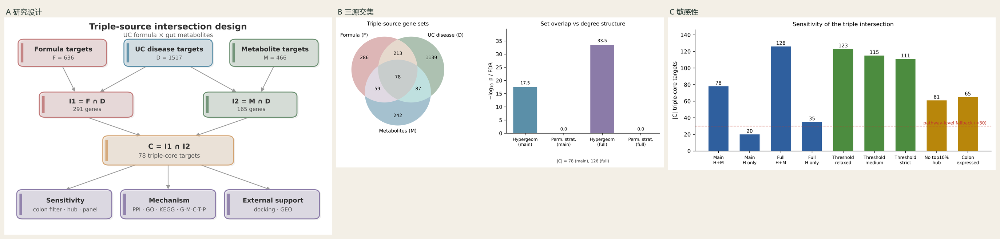
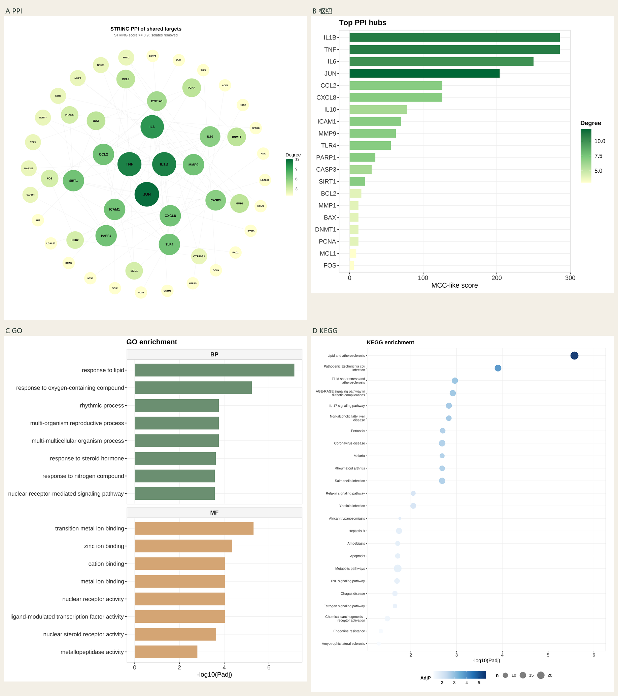
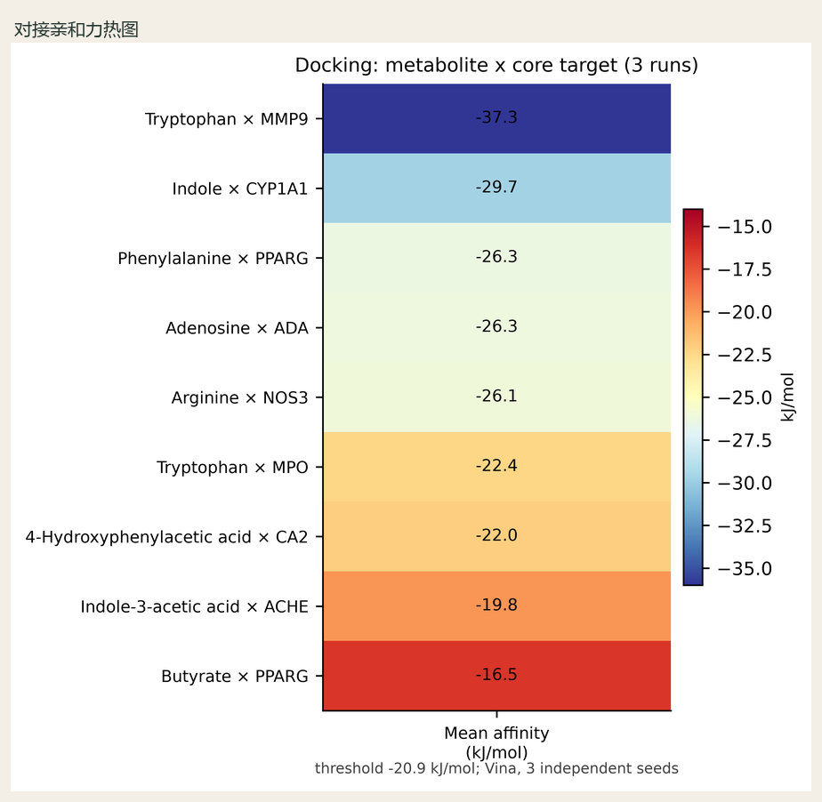
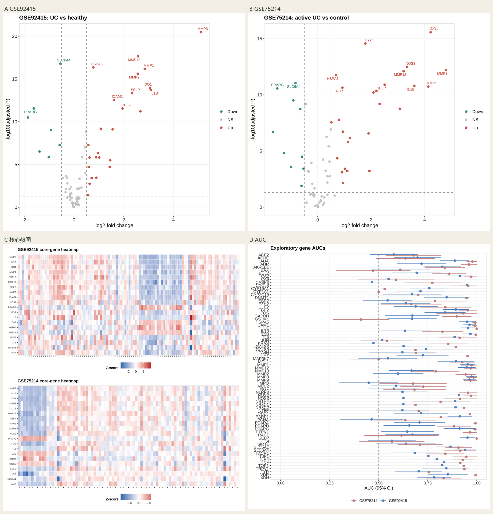
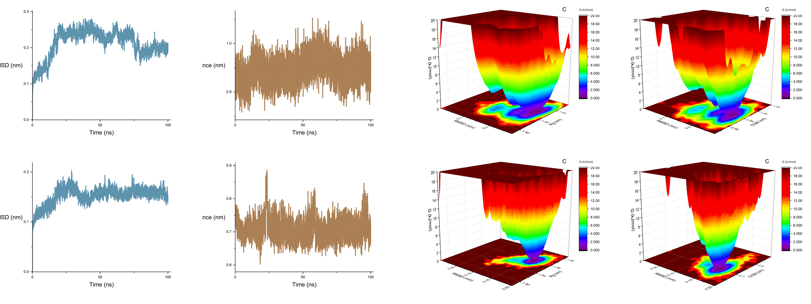

方法版回答「每一步怎么做、数据从哪来、洗完放哪、做到哪一关停」。与 01_网络药理学/ 同级，目录 00_全流程报告/。路径均相对于 努力学习项目/。每模块至多一张拼图；单张结果细读在论文版。
总览
| 编号 | 主要数据库 / 上游模块 | 原始数据路径 | 处理后主产物路径 |
|---|---|---|---|
| 01 | 交付网药；GeneCards/OMIM/DisGeNET/CTD 等合并 D | 01_网络药理学/结果文件/数据文件/ | 同模块药病交集；I₁ 供 03 |
| 02 | 有害暴露物；CTD/TTD/AOP-Wiki 线索 | 02_网络毒理学_毒性分层/ 数据与登记表 | 02_.../结果文件/数据文件/、图片文件/ |
| 03 | gutMGene、GMMAD2、SEA16(ChEMBL27)、STP；上游 01 的 I₁、D | 03_三源交集_复方UC菌群/结果文件/数据文件/ 下外部库与 SEA/STP 原始 | 双交集统计汇总.csv、C_*.csv、I2_*.csv |
| 04 | 上游 03 的 C；STRING | 读 C 表 | 04_机制层_PPI富集/结果文件/数据文件/机制层/ |
| 05 | 上游 03 的 C 与代谢物边；GMMAD2 | 03 数据 + 外部导出 | 05_干预代谢物预测/结果文件/数据文件/预测/ |
| 06 | PubChem；RCSB PDB；上游配对表 | 06_分子对接/数据文件/对接工作区/ | 06_.../结果文件/数据文件/对接/对接汇总.csv |
| 07 | GEO（GSE92415、GSE75214）；上游 C | GEO series matrix 缓存于 07 模块 | 07_外部支持_GEO与MR/结果文件/数据文件/GEO验证/ |
| 08 | 上游 06 Top 复合物；RCSB 结构 | WSL 运行目录；课题输入 | 08_分子动力学/结果文件/数据文件/分子动力学_MD/；DONE.txt |
01 网络药理学
1. 为何采用这一分析
得到复方靶点并集 F 与药病交集 I₁，作为三源交集的复方侧上游。此步不混入菌群代谢物，避免把网药与网毒/菌群轴做成同一段。
2. 数据来源
数据库：疾病靶点 D 为交付合并集，登记来源包括 GeneCards、OMIM、DisGeNET、CTD 等；成分靶点来自交付网药流水线（含 SwissTargetPrediction 等历史抓取）。
为何用该数据集：与客户交付口径一致，保证后续 I₁ 可复现；不用另开一套疾病库以免「换库即改交集」。
原始路径：01_网络药理学/结果文件/数据文件/（药物靶点与疾病表）。
处理后路径：同模块下药病交集表与网药图；I₁ 基因列表供 03_三源交集_复方UC菌群/ 读取。
3. 筛选标准
I₁=F∩D。|D| 冻结为 1517，不随库更新改动。单药/全药表按交付字段去重、统一基因符号。这样清洗是为了冻结宇宙集，使超几何与置换的分母稳定。
4. 数据处理与函数
合并各成分靶点→去重得 F→与 D 求交得 I₁→出网药阶段图。脚本与阶段报告见 01_网络药理学/。
5. 参数与取值原因
D=1517 为课题锁定（非软件默认）。不在本步引入 SEA/STP 阈值。
6. 输入与输出
输入：交付靶点与疾病表。输出：I₁=291 及网药图。停机：I₁ 为空则不得进入 03。
7. 结果数据与图片怎么读
验收：I₁ 基因数=291。方法版不堆网药长图；细图在 01_网络药理学/结果文件/图片文件/。
8. 解读边界
只写药病重叠候选，不写疗效或菌群机制。
02 网络毒理学·毒性分层（支线）
1. 为何采用这一分析
满足毒性分层支线交付；主线证据仍是 03 的三源共有靶点，不把毒性分层当作对接/MD 的准入门槛。
2. 数据来源
数据库：有害暴露物名单；毒性/不良结局线索来自 CTD、TTD、AOP-Wiki（按计划登记使用）。代谢物有害分层可对照 gutMGene/GMMAD2 注释字段。
为何用：提供暴露物–不良结局线索，供主面板排除既定有害物时引用。
原始 / 处理后：02_网络毒理学_毒性分层/结果文件/数据文件/ 与 .../图片文件/。
3. 筛选标准
不良结局限定肠屏障损伤、肠道炎症、黏膜损伤/癌变风险（2026-10-07 冻结）。主面板 Tier A 结论排除既定有害物。这样洗是为了毒性支线不污染主交集叙事。
4. 数据处理与函数
整理暴露物–靶点–结局表并出分层图；不改写 I₁/C。
5. 参数与取值原因
结局词表为课题冻结；不引入完整 TCMToxDB 主线参数。
6. 输入与输出
输入：暴露物与线索表。输出：毒性分层表/图。停机：本支线失败不阻塞 03–08，但须在报告注明。
7. 结果数据与图片怎么读
读分层表与图；方法版不强制拼图。验收：结局词表与排除名单可追溯。
8. 解读边界
只写毒性线索，不用「减毒/拮抗」作主结论。
03 三源交集
1. 为何采用这一分析
检验复方靶点、菌群代谢物靶点与 UC 疾病靶点三者共有（C=I₁∩I₂）。不用「只做 M∩D」或「只做 F∩D」代替三源定义。
2. 数据来源
| 来源 | 取什么 | 为何用 / 为何这样洗 | 路径 |
|---|---|---|---|
| 01 模块 | I₁、F | 复方侧已冻结 | 读 01 产物 → 本模块汇总 |
| 疾病 D | 1517 基因 | 交付多库合并；冻结不改 | 随 01/交付疾病表 |
| gutMGene v2 | 人源微生物–代谢物、代谢物–基因实证边 | 策展库；实证记 H | 03_.../结果文件/数据文件/ 外部库导出 |
| GMMAD2 | UC/IBD 代谢物关联分与 FDR | 疾病相关代谢物优先级；主面板要求 FDR<0.05 | 外部库导出 → 代谢物面板表 |
| SEA16 (ChEMBL 27) | 代谢物相似性靶点 | 公共代理下 ChEMBL 36 不稳定，回退 SEA16；必须写 27 而非 36 | 03_.../数据文件/ SEA16 原始 |
| SwissTargetPrediction | 代谢物预测靶点（PubChem SMILES） | 与 SEA 交集才保留为 M 级；单工具丢弃为 L | STP 原始目录 |
原始：上表各库导出与 SEA/STP 原始抓取。处理后：03_三源交集_复方UC菌群/结果文件/数据文件/ 下 C_*.csv、I2_*.csv、双交集统计汇总.csv；代谢物面板在同模块代谢物子目录。
3. 筛选标准
主面板代谢物=UC/IBD 证据优先（文献 / GMMAD2 高分 / gutMGene 实证，预登记顺序）；gutMGene 人类全库仅敏感性。M 靶点=H∪(SEA∩STP)。I₂=M∩D；C=I₁∩I₂。置换各 1000 次；去 top10% hub 作敏感性。这样洗是为了：主结论可辩护、预测边必须双工具一致、置换能并列报告。
4. 数据处理与函数
构建 M→算 I₂/C→超几何与 BH→Jaccard→度加权/度分层置换→写汇总 CSV。函数/脚本见 03 模块代码与阶段报告。
5. 参数与取值原因
D=1517、置换=1000 课题锁定；主面板定义预登记。SEA 版本锁定 ChEMBL 27。
6. 输入与输出
输入：I₁、D、各库边。输出：汇总表与 C 列表。停机：C 为空则 04–05 不启动。
7. 结果数据与图片怎么读

读 双交集统计汇总.csv 中 main_evidence_priority+H_plus_M 行：C_genes=78。验收：该行存在且置换列齐全。
8. 解读边界
可报规模与检验；置换 p=1.0 必须与超几何显著并列。不写疗效。
04 机制层
1. 为何采用这一分析
在已定义的 C 上给出 PPI/模块/富集/五层网络语境，供代谢物分层与对接配对阅读。不在此步重算 C。
2. 数据来源
来自分析：上游 03 的 C 基因列表。
数据库：STRING（Homo sapiens）互作边。
为何用 STRING：与网药交付流水线一致，可用 combined score 复现过滤；不用把低置信边画进主图。
原始：C 表（03 处理后）。处理后：04_机制层_PPI富集/结果文件/数据文件/机制层/。
3. 筛选标准
combined score ≥ 0.9（课题偏严锁定）。枢纽用 MCC-like=Degree×局部三角（非官方 cytoHubba 分数）。GO/KEGG 背景为 D 映射后的 Entrez。这样洗是为了主图只保留高置信互作，并与疾病宇宙集对齐。
4. 数据处理与函数
读 C→拉 STRING 边→过滤→MCC-like 排序→MCODE 兼容模块→GO/KEGG→五层网络摘要图与 CSV。
5. 参数与取值原因
score≥0.9 课题锁定；MCODE 参数见阶段报告。富集显著性阈值按阶段脚本（BH）。
6. 输入与输出
输入：C。输出：PPI/枢纽/GO/KEGG/配对与五层网络文件。停机：C<背景要求时按脚本跳过富集并记录。
7. 结果数据与图片怎么读

验收：PPI 边表 + GO/KEGG 显著表存在。
8. 解读边界
共同调控候选语境；非复方特异通路定位。
05 干预代谢物预测
1. 为何采用这一分析
在 C 已固定后，按代谢物覆盖的 C 靶点数分层，形成可对接的候选名单。不按对接分回溯改 Tier。
2. 数据来源
来自分析：03 的 C；03 的代谢物–靶点边（H/M）。
数据库：GMMAD2 UC 关联分与 FDR。
为何用：n_C 描述「代谢物是否打到三源核心」；GMMAD2 提供疾病相关性过滤。
原始：03 数据与 GMMAD2 导出。处理后：05_干预代谢物预测/结果文件/数据文件/预测/。
3. 筛选标准
n_C≥1 为 Tier A；主面板另要求 GMMAD2 UC FDR<0.05。有害物按 02 名单排除出主结论。这样洗是为了候选可解释且与疾病关联同向。
4. 数据处理与函数
对每个代谢物计算 T_m∩C→分层→写主表与阶段 Markdown 报告。
5. 参数与取值原因
Tier 阈值 n_C≥1 与 FDR<0.05 为课题锁定；不对接触发准入。
6. 输入与输出
输入：C 与边。输出：预测主表。停机：无 Tier A 则 06 不扩展配对。
7. 结果数据与图片怎么读
方法版不附图。读预测主表与 报告_复方干预代谢物预测.md。验收：主面板 Tier A=72。
8. 解读边界
候选提示；不写复方降低代谢物或疗效。
06 分子对接
1. 为何采用这一分析
对高优先级代谢物–基因对给出可重复的对接打分，筛选进入 MD 的复合物。打分只作结合候选，不作 Kd。
2. 数据来源
数据库：PubChem（canonical SMILES）；RCSB PDB（受体结构）。
来自分析：05/04 产出的高优先级代谢物–靶点配对。
为何这些结构：需要可对接的三维受体；优先有机共晶、分辨率 ≤3.0 Å；无合适结构则换同家族并注明（如 NOS2→NOS3）。MMP9 正式用 4H3X（弃用 1GKD E402Q 突变体）。
原始：06_分子对接/数据文件/对接工作区/。处理后：06_分子对接/结果文件/数据文件/对接/对接汇总.csv。
3. 筛选标准
9 对正式配对；每对 3 种子；均值 ≤ −20.9 kJ/mol 且 pass_rate=1 为通过。这样洗是为了用统一能量阈值与多种子稳定性筛 MD 输入。
4. 数据处理与函数
准备配体/受体→Vina→汇总 mean/sd/pass_rate→热图。
5. 参数与取值原因
exhaustiveness=8；盒边长 22 Å；种子 1/7/42；阈值 −20.9 kJ/mol（课题锁定，非临时改口）。
6. 输入与输出
输入：配对表与结构。输出：对接汇总与热图。停机：无 PASS 对则 08 不启动对应体系。
7. 结果数据与图片怎么读

读 mean_kJ、pass_rate；pass_rate=1 为通过。
8. 解读边界
结合候选；非实验 Kd、非疗效。
07 外部支持 GEO/MR
1. 为何采用这一分析
用独立结肠黏膜转录组检查 C 基因在 UC vs 对照中的方向与可分性；MR 若有则只作遗传支持。不回写修改 C。
2. 数据来源
数据库：GEO — GSE92415（GPL13158）、GSE75214（GPL6244）官方 series matrix 与平台注释。
来自分析：03 的 C 基因列表。
为何这两套：均为结肠黏膜 UC vs 对照，可做外部一致性；排除 Crohn / 回肠 / inactive 混杂设计。
原始：07 模块内 GEO 下载缓存。处理后：07_外部支持_GEO与MR/结果文件/数据文件/GEO验证/。
3. 筛选标准
C→探针/基因映射；计算 logFC、P/FDR；方向一致性；z-score panel AUC。GSE92415 用于定向，故该队列 AUC 有乐观偏倚，必须在读法中写明。这样洗是为了外部支持可复核且偏倚可见。
4. 数据处理与函数
读入矩阵与表型→差异→映射 C→热图/火山/AUC。
5. 参数与取值原因
队列纳入规则课题锁定；定向规则固定为 GSE92415 方向。
6. 输入与输出
输入：C + GEO 矩阵。输出：验证表与图。停机：映射失败基因过多则只报映射率、不宣称 AUC。
7. 结果数据与图片怎么读

验收：两队列表与图齐全；正文写明定向偏倚。
8. 解读边界
外部一致性；非疗效、非诊断产品。
08 分子动力学
1. 为何采用这一分析
对接通过且可建体系的复合物做有监控的 100 ns 生产段，记录骨架/配体 RMSD 与 COM。飞出后不续跑同一 md.cpt 充数。
2. 数据来源
来自分析：06 对接 Top 复合物坐标与拓扑构建输入。
结构库：RCSB（4H3X、7RTG、3IAR 等）。
为何正式两套：亲和力最强且可建体系；ADA 空口袋飞出后改 A2；CYP 飞出后取消并书面记录。
原始运行：WSL ~/md_runs/（或课题约定运行根）。
处理后交付：08_分子动力学/结果文件/数据文件/分子动力学_MD/ 与 .../图片文件/分子动力学图_MD/；全流程副本可在 00_全流程报告/结果文件/。
3. 筛选标准
NS=100；CHUNK=1；MONITOR=1；飞出阈值见复合物 MD SOP。飞出→CANCELLED 或正式重做，不把飞出轨迹当稳定证据。这样洗是为了「监控内完成」可验收。
4. 数据处理与函数
建体系→能量最小化/平衡→生产→监控→导出 Origin/FEL→写 报告_正式MD_100ns.md 与 DONE/CANCELLED。
5. 参数与取值原因
NS=100 课题锁定；GPU 只改速度不改分析定义。
6. 输入与输出
输入：对接复合物。输出：轨迹指标、图、DONE。停机：飞出则该体系 CANCELLED，不进入「稳定」表述。
7. 结果数据与图片怎么读

验收：报告_正式MD_100ns.md 与 DONE；CYP 为 CANCELLED 书面记录。论文版必须链入该体系图册 01–20（含 3D 自由能形貌 17–20），不得只贴 RMSD/COM。
8. 解读边界
监控内 100 ns；非实验 ΔG；CYP 不宣称稳定。
文末清单
- 质控：01 I₁=291；03 汇总表存在 main H+M 行；06 pass_rate 可区分；08 DONE 或 CANCELLED 有书面记录。
- 复现：SEA=ChEMBL 27 回退；对接种子 1/7/42；MD NS=100。
- 硬件：GPU 只改变速度。
- 改图：只换 png 且数字未变不必改正文；重算 C/对接/MD 必须改论文版数字。